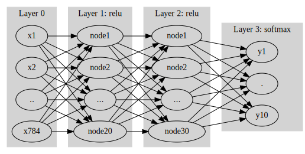
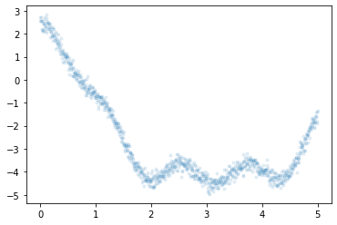
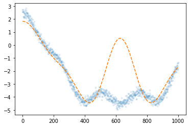

import numpy as np
import matplotlib.pyplot as plt
import tensorflow as tf
import tensorflow.experimental.numpy as tnp기말고사 예상문제
빅데이터분석특강
기말고사 - toc:false - branch: master - badges: true - comments: true - author: 심재인
imports
tnp.experimental_enable_numpy_behavior()%load_ext tensorboardimport graphviz
def gv(s): return graphviz.Source('digraph G{ rankdir="LR"'+ s + ';}')1. Fashion_mnist, DNN (30점)
(1) tf.keras.datasets.fashion_mnist.load_data()을 이용하여 fashion_mnist 자료를 불러온 뒤 아래의 네트워크를 이용하여 적합하라.
- 평가지표로 accuracy를 이용할 것
- epoch은 10으로 설정할 것
- optimizer는 adam을 이용할 것
#collapse
gv('''
splines=line
subgraph cluster_1{
style=filled;
color=lightgrey;
"x1"
"x2"
".."
"x784"
label = "Layer 0"
}
subgraph cluster_2{
style=filled;
color=lightgrey;
"x1" -> "node1"
"x2" -> "node1"
".." -> "node1"
"x784" -> "node1"
"x1" -> "node2"
"x2" -> "node2"
".." -> "node2"
"x784" -> "node2"
"x1" -> "..."
"x2" -> "..."
".." -> "..."
"x784" -> "..."
"x1" -> "node20"
"x2" -> "node20"
".." -> "node20"
"x784" -> "node20"
label = "Layer 1: relu"
}
subgraph cluster_3{
style=filled;
color=lightgrey;
"node1" -> "node1 "
"node2" -> "node1 "
"..." -> "node1 "
"node20" -> "node1 "
"node1" -> "node2 "
"node2" -> "node2 "
"..." -> "node2 "
"node20" -> "node2 "
"node1" -> "... "
"node2" -> "... "
"..." -> "... "
"node20" -> "... "
"node1" -> "node30 "
"node2" -> "node30 "
"..." -> "node30 "
"node20" -> "node30 "
label = "Layer 2: relu"
}
subgraph cluster_4{
style=filled;
color=lightgrey;
"node1 " -> "y10"
"node2 " -> "y10"
"... " -> "y10"
"node30 " -> "y10"
"node1 " -> "y1"
"node2 " -> "y1"
"... " -> "y1"
"node30 " -> "y1"
"node1 " -> "."
"node2 " -> "."
"... " -> "."
"node30 " -> "."
label = "Layer 3: softmax"
}
''')
(x_train, y_train), (x_test, y_test) = tf.keras.datasets.fashion_mnist.load_data()X = tf.constant(x_train.reshape(-1,28,28,1),dtype=tf.float64)
y = tf.keras.utils.to_categorical(y_train)
XX = tf.constant(x_test.reshape(-1,28,28,1),dtype=tf.float64)
yy = tf.keras.utils.to_categorical(y_test)tf.random.set_seed(4305)
net = tf.keras.Sequential()
net.add(tf.keras.layers.Flatten())
net.add(tf.keras.layers.Dense(20,activation='relu'))
net.add(tf.keras.layers.Dense(30,activation='relu'))
net.add(tf.keras.layers.Dense(10,activation='softmax'))
net.compile(loss=tf.losses.categorical_crossentropy, optimizer='adam',metrics=['accuracy'])
net.fit(X,y,epochs=10)Epoch 1/10
1875/1875 [==============================] - 3s 2ms/step - loss: 1.5829 - accuracy: 0.5105
Epoch 2/10
1875/1875 [==============================] - 2s 1ms/step - loss: 0.9581 - accuracy: 0.6048
Epoch 3/10
1875/1875 [==============================] - 3s 2ms/step - loss: 0.9115 - accuracy: 0.6188
Epoch 4/10
1875/1875 [==============================] - 3s 1ms/step - loss: 0.8911 - accuracy: 0.6262
Epoch 5/10
1875/1875 [==============================] - 2s 1ms/step - loss: 0.8937 - accuracy: 0.6198
Epoch 6/10
1875/1875 [==============================] - 2s 1ms/step - loss: 0.8745 - accuracy: 0.6296
Epoch 7/10
1875/1875 [==============================] - 2s 1ms/step - loss: 0.8683 - accuracy: 0.6305
Epoch 8/10
1875/1875 [==============================] - 3s 1ms/step - loss: 0.8586 - accuracy: 0.6331
Epoch 9/10
1875/1875 [==============================] - 3s 2ms/step - loss: 0.8512 - accuracy: 0.6346
Epoch 10/10
1875/1875 [==============================] - 2s 1ms/step - loss: 0.8361 - accuracy: 0.6405<keras.callbacks.History at 0x7f6074641780>(2) (1)에서 적합된 네트워크를 이용하여 test data의 accuracy를 구하라.
net.evaluate(XX,yy)313/313 [==============================] - 0s 1ms/step - loss: 0.9906 - accuracy: 0.6023[0.9906449317932129, 0.6022999882698059](3) train set에서 20%의 자료를 validation 으로 분리하여 50에폭동안 학습하라. 텐서보드를 이용하여 train accuracy와 validation accuracy를 시각화 하고 결과를 해석하라. 오버피팅이라고 볼 수 있는가?
tf.random.set_seed(4305)
net = tf.keras.Sequential()
net.add(tf.keras.layers.Flatten())
net.add(tf.keras.layers.Dense(20,activation='relu'))
net.add(tf.keras.layers.Dense(30,activation='relu'))
net.add(tf.keras.layers.Dense(10,activation='softmax'))
net.compile(loss=tf.losses.categorical_crossentropy, optimizer='adam',metrics=['accuracy'])#collapse_output
cb1 = tf.keras.callbacks.TensorBoard()
net.fit(X,y,epochs=50,batch_size=200,validation_split=0.2,callbacks=cb1,verbose=1)Epoch 1/50
240/240 [==============================] - 1s 2ms/step - loss: 3.7604 - accuracy: 0.2533 - val_loss: 1.8268 - val_accuracy: 0.3212
Epoch 2/50
240/240 [==============================] - 0s 2ms/step - loss: 1.7592 - accuracy: 0.3275 - val_loss: 1.6927 - val_accuracy: 0.3509
Epoch 3/50
240/240 [==============================] - 1s 2ms/step - loss: 1.6008 - accuracy: 0.3767 - val_loss: 1.5118 - val_accuracy: 0.4139
Epoch 4/50
240/240 [==============================] - 0s 2ms/step - loss: 1.4380 - accuracy: 0.4215 - val_loss: 1.3867 - val_accuracy: 0.4374
Epoch 5/50
240/240 [==============================] - 0s 2ms/step - loss: 1.3066 - accuracy: 0.4505 - val_loss: 1.2980 - val_accuracy: 0.4444
Epoch 6/50
240/240 [==============================] - 1s 2ms/step - loss: 1.2581 - accuracy: 0.4582 - val_loss: 1.2748 - val_accuracy: 0.4487
Epoch 7/50
240/240 [==============================] - 1s 3ms/step - loss: 1.2330 - accuracy: 0.4642 - val_loss: 1.2586 - val_accuracy: 0.4619
Epoch 8/50
240/240 [==============================] - 1s 2ms/step - loss: 1.2193 - accuracy: 0.4665 - val_loss: 1.2448 - val_accuracy: 0.4613
Epoch 9/50
240/240 [==============================] - 1s 3ms/step - loss: 1.2105 - accuracy: 0.4708 - val_loss: 1.2377 - val_accuracy: 0.4622
Epoch 10/50
240/240 [==============================] - 0s 2ms/step - loss: 1.2070 - accuracy: 0.4655 - val_loss: 1.2371 - val_accuracy: 0.4642
Epoch 11/50
240/240 [==============================] - 0s 2ms/step - loss: 1.2008 - accuracy: 0.4737 - val_loss: 1.2230 - val_accuracy: 0.4660
Epoch 12/50
240/240 [==============================] - 0s 2ms/step - loss: 1.1410 - accuracy: 0.5050 - val_loss: 1.1361 - val_accuracy: 0.5242
Epoch 13/50
240/240 [==============================] - 0s 2ms/step - loss: 1.0190 - accuracy: 0.5516 - val_loss: 1.0478 - val_accuracy: 0.5467
Epoch 14/50
240/240 [==============================] - 0s 2ms/step - loss: 0.9785 - accuracy: 0.5649 - val_loss: 0.9969 - val_accuracy: 0.5644
Epoch 15/50
240/240 [==============================] - 0s 2ms/step - loss: 0.9415 - accuracy: 0.5791 - val_loss: 0.9576 - val_accuracy: 0.5727
Epoch 16/50
240/240 [==============================] - 0s 2ms/step - loss: 0.9153 - accuracy: 0.5905 - val_loss: 0.9360 - val_accuracy: 0.5847
Epoch 17/50
240/240 [==============================] - 0s 2ms/step - loss: 0.9017 - accuracy: 0.5966 - val_loss: 0.9458 - val_accuracy: 0.5847
Epoch 18/50
240/240 [==============================] - 0s 2ms/step - loss: 0.8910 - accuracy: 0.6009 - val_loss: 0.9270 - val_accuracy: 0.5822
Epoch 19/50
240/240 [==============================] - 0s 2ms/step - loss: 0.8784 - accuracy: 0.6180 - val_loss: 0.8976 - val_accuracy: 0.6333
Epoch 20/50
240/240 [==============================] - 0s 2ms/step - loss: 0.8352 - accuracy: 0.6661 - val_loss: 0.8576 - val_accuracy: 0.6777
Epoch 21/50
240/240 [==============================] - 1s 2ms/step - loss: 0.7971 - accuracy: 0.6873 - val_loss: 0.8313 - val_accuracy: 0.6733
Epoch 22/50
240/240 [==============================] - 0s 2ms/step - loss: 0.7644 - accuracy: 0.7017 - val_loss: 0.7697 - val_accuracy: 0.7097
Epoch 23/50
240/240 [==============================] - 0s 2ms/step - loss: 0.7318 - accuracy: 0.7209 - val_loss: 0.7529 - val_accuracy: 0.7385
Epoch 24/50
240/240 [==============================] - 0s 2ms/step - loss: 0.7057 - accuracy: 0.7413 - val_loss: 0.6952 - val_accuracy: 0.7667
Epoch 25/50
240/240 [==============================] - 0s 2ms/step - loss: 0.6893 - accuracy: 0.7513 - val_loss: 0.7467 - val_accuracy: 0.7442
Epoch 26/50
240/240 [==============================] - 0s 2ms/step - loss: 0.6604 - accuracy: 0.7602 - val_loss: 0.6979 - val_accuracy: 0.7577
Epoch 27/50
240/240 [==============================] - 1s 2ms/step - loss: 0.6607 - accuracy: 0.7580 - val_loss: 0.7469 - val_accuracy: 0.7286
Epoch 28/50
240/240 [==============================] - 0s 2ms/step - loss: 0.6563 - accuracy: 0.7586 - val_loss: 0.7293 - val_accuracy: 0.7120
Epoch 29/50
240/240 [==============================] - 1s 2ms/step - loss: 0.6480 - accuracy: 0.7643 - val_loss: 0.6978 - val_accuracy: 0.7479
Epoch 30/50
240/240 [==============================] - 1s 3ms/step - loss: 0.6468 - accuracy: 0.7636 - val_loss: 0.6801 - val_accuracy: 0.7651
Epoch 31/50
240/240 [==============================] - 0s 2ms/step - loss: 0.6383 - accuracy: 0.7667 - val_loss: 0.6997 - val_accuracy: 0.7478
Epoch 32/50
240/240 [==============================] - 0s 2ms/step - loss: 0.6562 - accuracy: 0.7581 - val_loss: 0.6934 - val_accuracy: 0.7676
Epoch 33/50
240/240 [==============================] - 0s 2ms/step - loss: 0.6394 - accuracy: 0.7653 - val_loss: 0.6672 - val_accuracy: 0.7673
Epoch 34/50
240/240 [==============================] - 1s 2ms/step - loss: 0.6428 - accuracy: 0.7643 - val_loss: 0.6584 - val_accuracy: 0.7627
Epoch 35/50
240/240 [==============================] - 0s 2ms/step - loss: 0.6232 - accuracy: 0.7701 - val_loss: 0.7548 - val_accuracy: 0.7439
Epoch 36/50
240/240 [==============================] - 0s 2ms/step - loss: 0.6402 - accuracy: 0.7639 - val_loss: 0.6739 - val_accuracy: 0.7664
Epoch 37/50
240/240 [==============================] - 1s 3ms/step - loss: 0.6296 - accuracy: 0.7692 - val_loss: 0.6644 - val_accuracy: 0.7657
Epoch 38/50
240/240 [==============================] - 1s 2ms/step - loss: 0.6076 - accuracy: 0.7751 - val_loss: 0.6762 - val_accuracy: 0.7726
Epoch 39/50
240/240 [==============================] - 1s 2ms/step - loss: 0.6217 - accuracy: 0.7686 - val_loss: 0.6467 - val_accuracy: 0.7686
Epoch 40/50
240/240 [==============================] - 1s 2ms/step - loss: 0.6227 - accuracy: 0.7717 - val_loss: 0.7088 - val_accuracy: 0.7470
Epoch 41/50
240/240 [==============================] - 0s 2ms/step - loss: 0.6263 - accuracy: 0.7676 - val_loss: 0.6680 - val_accuracy: 0.7705
Epoch 42/50
240/240 [==============================] - 0s 2ms/step - loss: 0.6181 - accuracy: 0.7732 - val_loss: 0.6628 - val_accuracy: 0.7694
Epoch 43/50
240/240 [==============================] - 0s 2ms/step - loss: 0.6025 - accuracy: 0.7766 - val_loss: 0.6621 - val_accuracy: 0.7640
Epoch 44/50
240/240 [==============================] - 1s 2ms/step - loss: 0.6106 - accuracy: 0.7748 - val_loss: 0.6728 - val_accuracy: 0.7655
Epoch 45/50
240/240 [==============================] - 0s 2ms/step - loss: 0.6247 - accuracy: 0.7727 - val_loss: 0.7016 - val_accuracy: 0.7570
Epoch 46/50
240/240 [==============================] - 0s 2ms/step - loss: 0.6118 - accuracy: 0.7766 - val_loss: 0.6759 - val_accuracy: 0.7631
Epoch 47/50
240/240 [==============================] - 1s 3ms/step - loss: 0.6121 - accuracy: 0.7748 - val_loss: 0.6359 - val_accuracy: 0.7703
Epoch 48/50
240/240 [==============================] - 0s 2ms/step - loss: 0.5991 - accuracy: 0.7783 - val_loss: 0.6671 - val_accuracy: 0.7711
Epoch 49/50
240/240 [==============================] - 0s 2ms/step - loss: 0.6036 - accuracy: 0.7785 - val_loss: 0.6549 - val_accuracy: 0.7624
Epoch 50/50
240/240 [==============================] - 0s 2ms/step - loss: 0.6135 - accuracy: 0.7747 - val_loss: 0.7121 - val_accuracy: 0.7519<keras.callbacks.History at 0x7f60745bd420>%tensorboard --logdir logs --host 0.0.0.0(4) (3)에서 적합된 네트워크를 이용하여 test data의 accuracy를 구하라. (2)의 결과와 비교하라.
net.evaluate(XX,yy)313/313 [==============================] - 0s 1ms/step - loss: 0.7562 - accuracy: 0.7376[0.7561669945716858, 0.7376000285148621](5) 조기종료기능을 이용하여 (3)의 네트워크를 다시 학습하라. 학습결과를 텐서보드를 이용하여 시각화 하라. - patience=3 으로 설정할 것
tf.random.set_seed(4305)
net = tf.keras.Sequential()
net.add(tf.keras.layers.Flatten())
net.add(tf.keras.layers.Dense(20,activation='relu'))
net.add(tf.keras.layers.Dense(30,activation='relu'))
net.add(tf.keras.layers.Dense(10,activation='softmax'))
net.compile(loss=tf.losses.categorical_crossentropy, optimizer='adam',metrics=['accuracy'])cb1 = tf.keras.callbacks.TensorBoard()
cb2 = tf.keras.callbacks.EarlyStopping(patience=3)
net.fit(X,y,epochs=50,batch_size=200,validation_split=0.2,callbacks=[cb1,cb2])Epoch 1/50
240/240 [==============================] - 1s 2ms/step - loss: 3.7604 - accuracy: 0.2533 - val_loss: 1.8268 - val_accuracy: 0.3212
Epoch 2/50
240/240 [==============================] - 0s 2ms/step - loss: 1.7592 - accuracy: 0.3275 - val_loss: 1.6927 - val_accuracy: 0.3509
Epoch 3/50
240/240 [==============================] - 0s 2ms/step - loss: 1.6008 - accuracy: 0.3767 - val_loss: 1.5118 - val_accuracy: 0.4139
Epoch 4/50
240/240 [==============================] - 1s 2ms/step - loss: 1.4380 - accuracy: 0.4215 - val_loss: 1.3867 - val_accuracy: 0.4374
Epoch 5/50
240/240 [==============================] - 1s 2ms/step - loss: 1.3066 - accuracy: 0.4505 - val_loss: 1.2980 - val_accuracy: 0.4444
Epoch 6/50
240/240 [==============================] - 0s 2ms/step - loss: 1.2581 - accuracy: 0.4582 - val_loss: 1.2748 - val_accuracy: 0.4487
Epoch 7/50
240/240 [==============================] - 1s 3ms/step - loss: 1.2330 - accuracy: 0.4642 - val_loss: 1.2586 - val_accuracy: 0.4619
Epoch 8/50
240/240 [==============================] - 1s 2ms/step - loss: 1.2193 - accuracy: 0.4665 - val_loss: 1.2448 - val_accuracy: 0.4613
Epoch 9/50
240/240 [==============================] - 0s 2ms/step - loss: 1.2105 - accuracy: 0.4708 - val_loss: 1.2377 - val_accuracy: 0.4622
Epoch 10/50
240/240 [==============================] - 0s 2ms/step - loss: 1.2061 - accuracy: 0.4659 - val_loss: 1.2383 - val_accuracy: 0.4653
Epoch 11/50
240/240 [==============================] - 0s 2ms/step - loss: 1.1626 - accuracy: 0.4972 - val_loss: 1.0994 - val_accuracy: 0.5357
Epoch 12/50
240/240 [==============================] - 0s 2ms/step - loss: 1.0339 - accuracy: 0.5463 - val_loss: 1.0432 - val_accuracy: 0.5406
Epoch 13/50
240/240 [==============================] - 0s 1ms/step - loss: 0.9805 - accuracy: 0.5605 - val_loss: 1.0071 - val_accuracy: 0.5533
Epoch 14/50
240/240 [==============================] - 0s 2ms/step - loss: 0.9512 - accuracy: 0.5733 - val_loss: 0.9570 - val_accuracy: 0.5700
Epoch 15/50
240/240 [==============================] - 1s 2ms/step - loss: 0.9320 - accuracy: 0.5836 - val_loss: 0.9522 - val_accuracy: 0.5748
Epoch 16/50
240/240 [==============================] - 1s 3ms/step - loss: 0.9043 - accuracy: 0.5893 - val_loss: 0.9527 - val_accuracy: 0.5817
Epoch 17/50
240/240 [==============================] - 1s 3ms/step - loss: 0.9029 - accuracy: 0.5948 - val_loss: 0.9524 - val_accuracy: 0.5967
Epoch 18/50
240/240 [==============================] - 0s 2ms/step - loss: 0.8863 - accuracy: 0.6029 - val_loss: 0.8971 - val_accuracy: 0.6086
Epoch 19/50
240/240 [==============================] - 0s 2ms/step - loss: 0.8806 - accuracy: 0.6055 - val_loss: 0.9137 - val_accuracy: 0.5938
Epoch 20/50
240/240 [==============================] - 0s 2ms/step - loss: 0.8638 - accuracy: 0.6175 - val_loss: 0.9310 - val_accuracy: 0.5863
Epoch 21/50
240/240 [==============================] - 0s 2ms/step - loss: 0.8681 - accuracy: 0.6205 - val_loss: 0.9162 - val_accuracy: 0.5987<keras.callbacks.History at 0x7f60743504f0>%tensorboard --logdir logs --host 0.0.0.0Reusing TensorBoard on port 6006 (pid 1543198), started 0:01:05 ago. (Use '!kill 1543198' to kill it.)2. Fashion_mnist, CNN (30점)
(1) tf.keras.datasets.fashion_mnist.load_data()을 이용하여 fashion_mnist 자료를 불러온 뒤 아래의 네트워크를 이용하여 적합하라.
- 이때 n1=6, n2=16, n3=120 으로 설정한다, 드랍아웃비율은 20%로 설정한다.
net.summary()를 출력하여 설계결과를 확인하라.

tf.random.set_seed(4305)
net1 = tf.keras.Sequential()
net1.add(tf.keras.layers.Conv2D(6,(4,4),activation='relu'))
net1.add(tf.keras.layers.MaxPool2D())
net1.add(tf.keras.layers.Conv2D(16,(4,4),activation='relu'))
net1.add(tf.keras.layers.MaxPool2D())
net1.add(tf.keras.layers.Flatten())
net1.add(tf.keras.layers.Dense(120,activation='relu'))
net1.add(tf.keras.layers.Dense(10,activation='softmax'))
net1.add(tf.keras.layers.Dropout(0.2))
net1.compile(optimizer='adam', loss=tf.losses.categorical_crossentropy,metrics='accuracy')
net1.fit(X,y,epochs=5,batch_size=200)Epoch 1/5
300/300 [==============================] - 2s 3ms/step - loss: 4.7348 - accuracy: 0.5660
Epoch 2/5
300/300 [==============================] - 1s 2ms/step - loss: 3.5846 - accuracy: 0.6644
Epoch 3/5
300/300 [==============================] - 1s 3ms/step - loss: 3.5181 - accuracy: 0.6817
Epoch 4/5
300/300 [==============================] - 2s 6ms/step - loss: 3.5000 - accuracy: 0.6915
Epoch 5/5
300/300 [==============================] - 1s 2ms/step - loss: 3.4955 - accuracy: 0.6991<keras.callbacks.History at 0x7f6074230f70>net1.evaluate(XX,yy)313/313 [==============================] - 0s 1ms/step - loss: 0.4737 - accuracy: 0.8336[0.47367578744888306, 0.8335999846458435]net1.summary()Model: "sequential_4"
_________________________________________________________________
Layer (type) Output Shape Param #
=================================================================
conv2d (Conv2D) (None, 25, 25, 6) 102
max_pooling2d (MaxPooling2D (None, 12, 12, 6) 0
)
conv2d_1 (Conv2D) (None, 9, 9, 16) 1552
max_pooling2d_1 (MaxPooling (None, 4, 4, 16) 0
2D)
flatten_3 (Flatten) (None, 256) 0
dense_10 (Dense) (None, 120) 30840
dense_11 (Dense) (None, 10) 1210
dropout (Dropout) (None, 10) 0
=================================================================
Total params: 33,704
Trainable params: 33,704
Non-trainable params: 0
_________________________________________________________________c1, m1, c2, m2, flttn, dns1, dns2, dropout = net1.layersprint(X.shape)
print(c1(X).shape)
print(m1(c1(X)).shape)
print(c2(m1(c1(X))).shape)
print(m2(c2(m1(c1(X)))).shape)
print(flttn(m2(c2(m1(c1(X))))).shape)
print(dns1(flttn(m2(c2(m1(c1(X)))))).shape)
print(dns2(dns1(flttn(m2(c2(m1(c1(X))))))).shape)
print(dropout(dns2(dns1(flttn(m2(c2(m1(c1(X)))))))).shape)(60000, 28, 28, 1)
(60000, 25, 25, 6)
(60000, 12, 12, 6)
(60000, 9, 9, 16)
(60000, 4, 4, 16)
(60000, 256)
(60000, 120)
(60000, 10)
(60000, 10)(2) n1=(6,64,128), n2=(16,256)에 대하여 test set의 loss가 최소화되는 조합을 찾아라. 결과를 텐서보드로 시각화하는 코드를 작성하라. - epoc은 3회로 한정한다. - validation_split은 0.2로 설정한다.
from tensorboard.plugins.hparams import api as hp!rm -rf logs
for u in [6,64,128]:
for d in [16,256]:
logdir = 'logs/hpguebin_{}_{}'.format(u,d)
with tf.summary.create_file_writer(logdir).as_default():
tf.random.set_seed(4305)
net1 = tf.keras.Sequential()
net1.add(tf.keras.layers.Conv2D(6,(4,4),activation='relu'))
net1.add(tf.keras.layers.MaxPool2D())
net1.add(tf.keras.layers.Conv2D(16,(4,4),activation='relu'))
net1.add(tf.keras.layers.MaxPool2D())
net1.add(tf.keras.layers.Flatten())
net1.add(tf.keras.layers.Dense(120,activation='relu'))
net1.add(tf.keras.layers.Dense(10,activation='softmax'))
net1.add(tf.keras.layers.Dropout(0.2))
net1.compile(optimizer='adam', loss=tf.losses.categorical_crossentropy,metrics='accuracy')
cb3 = hp.KerasCallback(logdir, {'n1':u, 'n2':d})
net1.fit(X,y,epochs=3,batch_size=200,callbacks=cb3,validation_split=0.2)
_rslt=net.evaluate(XX,yy)
tf.summary.scalar('test set loss', _rslt[0], step=1)Epoch 1/3
240/240 [==============================] - 1s 2ms/step - loss: 4.5264 - accuracy: 0.5632 - val_loss: 0.7014 - val_accuracy: 0.7626
Epoch 2/3
240/240 [==============================] - 1s 2ms/step - loss: 3.6046 - accuracy: 0.6613 - val_loss: 0.5816 - val_accuracy: 0.7987
Epoch 3/3
240/240 [==============================] - 1s 4ms/step - loss: 3.5402 - accuracy: 0.6794 - val_loss: 0.5017 - val_accuracy: 0.8221
313/313 [==============================] - 1s 1ms/step - loss: 0.9186 - accuracy: 0.6016
Epoch 1/3
240/240 [==============================] - 1s 2ms/step - loss: 4.5248 - accuracy: 0.5633 - val_loss: 0.6992 - val_accuracy: 0.7633
Epoch 2/3
240/240 [==============================] - 1s 4ms/step - loss: 3.6040 - accuracy: 0.6615 - val_loss: 0.5797 - val_accuracy: 0.8017
Epoch 3/3
240/240 [==============================] - 1s 4ms/step - loss: 3.5399 - accuracy: 0.6792 - val_loss: 0.5047 - val_accuracy: 0.8190
313/313 [==============================] - 0s 1ms/step - loss: 0.9186 - accuracy: 0.6016
Epoch 1/3
240/240 [==============================] - 1s 2ms/step - loss: 4.5264 - accuracy: 0.5634 - val_loss: 0.7020 - val_accuracy: 0.7631
Epoch 2/3
240/240 [==============================] - 0s 2ms/step - loss: 3.6056 - accuracy: 0.6609 - val_loss: 0.5857 - val_accuracy: 0.8000
Epoch 3/3
240/240 [==============================] - 0s 2ms/step - loss: 3.5418 - accuracy: 0.6779 - val_loss: 0.5214 - val_accuracy: 0.8131
313/313 [==============================] - 0s 1ms/step - loss: 0.9186 - accuracy: 0.6016
Epoch 1/3
240/240 [==============================] - 1s 2ms/step - loss: 4.5273 - accuracy: 0.5639 - val_loss: 0.6979 - val_accuracy: 0.7663
Epoch 2/3
240/240 [==============================] - 1s 2ms/step - loss: 3.6087 - accuracy: 0.6604 - val_loss: 0.5780 - val_accuracy: 0.7997
Epoch 3/3
240/240 [==============================] - 1s 2ms/step - loss: 3.5387 - accuracy: 0.6801 - val_loss: 0.5023 - val_accuracy: 0.8219
313/313 [==============================] - 0s 1ms/step - loss: 0.9186 - accuracy: 0.6016
Epoch 1/3
240/240 [==============================] - 1s 2ms/step - loss: 4.5266 - accuracy: 0.5634 - val_loss: 0.7039 - val_accuracy: 0.7641
Epoch 2/3
240/240 [==============================] - 0s 2ms/step - loss: 3.6053 - accuracy: 0.6612 - val_loss: 0.5807 - val_accuracy: 0.8037
Epoch 3/3
240/240 [==============================] - 0s 2ms/step - loss: 3.5400 - accuracy: 0.6788 - val_loss: 0.5033 - val_accuracy: 0.8204
313/313 [==============================] - 0s 1ms/step - loss: 0.9186 - accuracy: 0.6016
Epoch 1/3
240/240 [==============================] - 1s 2ms/step - loss: 4.5264 - accuracy: 0.5642 - val_loss: 0.7000 - val_accuracy: 0.7630
Epoch 2/3
240/240 [==============================] - 0s 2ms/step - loss: 3.6065 - accuracy: 0.6603 - val_loss: 0.5829 - val_accuracy: 0.7987
Epoch 3/3
240/240 [==============================] - 0s 2ms/step - loss: 3.5391 - accuracy: 0.6795 - val_loss: 0.5180 - val_accuracy: 0.8127
313/313 [==============================] - 0s 1ms/step - loss: 0.9186 - accuracy: 0.6016%tensorboard --logdir logs --host 0.0.0.0Reusing TensorBoard on port 6006 (pid 1543198), started 0:03:17 ago. (Use '!kill 1543198' to kill it.)3. CIFAR10 (30점)
tf.keras.datasets.cifar10.load_data()을 이용하여 CIFAR10을 불러온 뒤 적당한 네트워크를 사용하여 적합하라.
- 결과를 텐서보드로 시각화할 필요는 없다.
- 자유롭게 모형을 설계하여 적합하라.
- test set의 accuracy가 70%이상인 경우만 정답으로 인정한다.
(x_train, y_train), (x_test, y_test) = tf.keras.datasets.cifar10.load_data()x_train.shape(50000, 32, 32, 3)X = tf.constant(x_train.reshape(-1,32,32,3),dtype=tf.float64)
y = tf.keras.utils.to_categorical(y_train)
XX = tf.constant(x_test.reshape(-1,32,32,3),dtype=tf.float64)
yy = tf.keras.utils.to_categorical(y_test)print(X.shape)
print(y.shape)
print(XX.shape)
print(yy.shape)(50000, 32, 32, 3)
(50000, 10)
(10000, 32, 32, 3)
(10000, 10)net2 = tf.keras.Sequential()
net2.add(tf.keras.layers.Conv2D(512,(2,2),activation='relu'))
net2.add(tf.keras.layers.Conv2D(512,(2,2),activation='relu'))
net2.add(tf.keras.layers.Dropout(0.5))
net2.add(tf.keras.layers.MaxPool2D())
net2.add(tf.keras.layers.Conv2D(512,(2,2),activation='relu'))
net2.add(tf.keras.layers.Conv2D(512,(2,2),activation='relu'))
net2.add(tf.keras.layers.Dropout(0.5))
net2.add(tf.keras.layers.MaxPool2D())
net2.add(tf.keras.layers.Flatten())
net2.add(tf.keras.layers.Dense(10,activation='softmax'))
net2.compile(optimizer='adam', loss=tf.losses.categorical_crossentropy,metrics='accuracy')net2.fit(X,y,epochs=5,validation_split=0.2)Epoch 1/5
1250/1250 [==============================] - 43s 35ms/step - loss: 0.7524 - accuracy: 0.7392 - val_loss: 0.8735 - val_accuracy: 0.6990
Epoch 2/5
1250/1250 [==============================] - 43s 35ms/step - loss: 0.7346 - accuracy: 0.7436 - val_loss: 0.8461 - val_accuracy: 0.7115
Epoch 3/5
1250/1250 [==============================] - 44s 35ms/step - loss: 0.7320 - accuracy: 0.7479 - val_loss: 0.9425 - val_accuracy: 0.6764
Epoch 4/5
1250/1250 [==============================] - 44s 35ms/step - loss: 0.7215 - accuracy: 0.7490 - val_loss: 0.8847 - val_accuracy: 0.6996
Epoch 5/5
1250/1250 [==============================] - 44s 35ms/step - loss: 0.7275 - accuracy: 0.7484 - val_loss: 0.8131 - val_accuracy: 0.7151<keras.callbacks.History at 0x7f61c0b057b0>net2.fit(X,y,epochs=10,validation_split=0.2)Epoch 1/10
1250/1250 [==============================] - 44s 35ms/step - loss: 0.9037 - accuracy: 0.6853 - val_loss: 1.0318 - val_accuracy: 0.6497
Epoch 2/10
1250/1250 [==============================] - 44s 35ms/step - loss: 0.8785 - accuracy: 0.6936 - val_loss: 0.9734 - val_accuracy: 0.6715
Epoch 3/10
1250/1250 [==============================] - 44s 35ms/step - loss: 0.8478 - accuracy: 0.7062 - val_loss: 0.9265 - val_accuracy: 0.6795
Epoch 4/10
1250/1250 [==============================] - 44s 35ms/step - loss: 0.8271 - accuracy: 0.7121 - val_loss: 0.9939 - val_accuracy: 0.6640
Epoch 5/10
1250/1250 [==============================] - 44s 35ms/step - loss: 0.8103 - accuracy: 0.7203 - val_loss: 0.8956 - val_accuracy: 0.6903
Epoch 6/10
1250/1250 [==============================] - 44s 35ms/step - loss: 0.8028 - accuracy: 0.7214 - val_loss: 0.9100 - val_accuracy: 0.6915
Epoch 7/10
1250/1250 [==============================] - 44s 35ms/step - loss: 0.7797 - accuracy: 0.7308 - val_loss: 0.9072 - val_accuracy: 0.6873
Epoch 8/10
1250/1250 [==============================] - 44s 35ms/step - loss: 0.7773 - accuracy: 0.7318 - val_loss: 0.8384 - val_accuracy: 0.7102
Epoch 9/10
1250/1250 [==============================] - 44s 35ms/step - loss: 0.7509 - accuracy: 0.7397 - val_loss: 0.9481 - val_accuracy: 0.6789
Epoch 10/10
1250/1250 [==============================] - 44s 35ms/step - loss: 0.7638 - accuracy: 0.7347 - val_loss: 0.8913 - val_accuracy: 0.6971<keras.callbacks.History at 0x7f61c0b51ab0>net2.evaluate(XX,yy)313/313 [==============================] - 4s 11ms/step - loss: 0.8302 - accuracy: 0.7135[0.830169141292572, 0.7135000228881836]4. 다음을 읽고 물음에 답하라. (10점)
(1) (1,128,128,3)의 shape을 가진 텐서가 tf.keras.layers.Conv2D(5,(2,2))으로 만들어진 커널을 통과할시 나오는 shape은?
tf.random.set_seed(43052)
cnv = tf.keras.layers.Conv2D(5,(2,2))
XXX = tnp.array([1]*1*128*128*3,dtype=tf.float64).reshape(1,128,128,3)cnv(XXX)<tf.Tensor: shape=(1, 127, 127, 5), dtype=float32, numpy=
array([[[[-0.7661123 , -0.81788373, 0.151829 , -0.94353175,
-0.43155703],
[-0.7661123 , -0.81788373, 0.151829 , -0.94353175,
-0.43155703],
[-0.7661123 , -0.81788373, 0.151829 , -0.94353175,
-0.43155703],
...,
[-0.7661123 , -0.81788373, 0.151829 , -0.94353175,
-0.43155703],
[-0.7661123 , -0.81788373, 0.151829 , -0.94353175,
-0.43155703],
[-0.7661123 , -0.81788373, 0.151829 , -0.94353175,
-0.43155703]],
[[-0.7661123 , -0.81788373, 0.151829 , -0.94353175,
-0.43155703],
[-0.7661123 , -0.81788373, 0.151829 , -0.94353175,
-0.43155703],
[-0.7661123 , -0.81788373, 0.151829 , -0.94353175,
-0.43155703],
...,
[-0.7661123 , -0.81788373, 0.151829 , -0.94353175,
-0.43155703],
[-0.7661123 , -0.81788373, 0.151829 , -0.94353175,
-0.43155703],
[-0.7661123 , -0.81788373, 0.151829 , -0.94353175,
-0.43155703]],
[[-0.7661123 , -0.81788373, 0.151829 , -0.94353175,
-0.43155703],
[-0.7661123 , -0.81788373, 0.151829 , -0.94353175,
-0.43155703],
[-0.7661123 , -0.81788373, 0.151829 , -0.94353175,
-0.43155703],
...,
[-0.7661123 , -0.81788373, 0.151829 , -0.94353175,
-0.43155703],
[-0.7661123 , -0.81788373, 0.151829 , -0.94353175,
-0.43155703],
[-0.7661123 , -0.81788373, 0.151829 , -0.94353175,
-0.43155703]],
...,
[[-0.7661123 , -0.81788373, 0.151829 , -0.94353175,
-0.43155703],
[-0.7661123 , -0.81788373, 0.151829 , -0.94353175,
-0.43155703],
[-0.7661123 , -0.81788373, 0.151829 , -0.94353175,
-0.43155703],
...,
[-0.7661123 , -0.81788373, 0.151829 , -0.94353175,
-0.43155703],
[-0.7661123 , -0.81788373, 0.151829 , -0.94353175,
-0.43155703],
[-0.7661123 , -0.81788373, 0.151829 , -0.94353175,
-0.43155703]],
[[-0.7661123 , -0.81788373, 0.151829 , -0.94353175,
-0.43155703],
[-0.7661123 , -0.81788373, 0.151829 , -0.94353175,
-0.43155703],
[-0.7661123 , -0.81788373, 0.151829 , -0.94353175,
-0.43155703],
...,
[-0.7661123 , -0.81788373, 0.151829 , -0.94353175,
-0.43155703],
[-0.7661123 , -0.81788373, 0.151829 , -0.94353175,
-0.43155703],
[-0.7661123 , -0.81788373, 0.151829 , -0.94353175,
-0.43155703]],
[[-0.7661123 , -0.81788373, 0.151829 , -0.94353175,
-0.43155703],
[-0.7661123 , -0.81788373, 0.151829 , -0.94353175,
-0.43155703],
[-0.7661123 , -0.81788373, 0.151829 , -0.94353175,
-0.43155703],
...,
[-0.7661123 , -0.81788373, 0.151829 , -0.94353175,
-0.43155703],
[-0.7661123 , -0.81788373, 0.151829 , -0.94353175,
-0.43155703],
[-0.7661123 , -0.81788373, 0.151829 , -0.94353175,
-0.43155703]]]], dtype=float32)>답 : (1, 127, 127, 5)
(2) (1,24,24,16)의 shape을 가진 텐서가 tf.keras.layers.Flatten()을 통과할때 나오는 텐서의 shape은?
24*24*169216답 : (1, 9216)
(3)-(4)
아래와 같은 모형을 고려하자.
\[y_i= \beta_0 + \sum_{k=1}^{5} \beta_k \cos(k t_i)+\epsilon_i\]
여기에서 \(t=(t_1,\dots,t_{1000})=\) np.linspace(0,5,1000) 이다. 그리고 \(\epsilon_i \sim i.i.d~ N(0,\sigma^2)\), 즉 서로 독립인 표준정규분포에서 추출된 샘플이다. 위의 모형에서 아래와 같은 데이터를 관측했다고 가정하자.
np.random.seed(43052)
t= np.linspace(0,5,1000)
y = -2+ 3*np.cos(t) + 1*np.cos(2*t) + 0.5*np.cos(5*t) + np.random.randn(1000)*0.2
plt.plot(t,y,'.',alpha=0.1)
tf.keras를 이용하여 \(\beta_0,\dots,\beta_5\)를 추정하라. (\(\beta_0,\dots,\beta_5\)의 참값은 각각 -2, 3, 1, 0, 0, 0.5 이다)
(3) 모형에 대한 설명 중 옳은 것을 모두 골라라.
(하영) 이 모형의 경우 MSEloss를 최소화하는 \(\hat{\beta}_0,\dots,\hat{\beta}_5\)를 구하는것은 최대우도함수를 최대화하는 \(\hat{\beta}_0,\dots,\hat{\beta}_5\)를 구하는 것과 같다.
답 : 참
(재인) 하영의 말이 옳은 이유는 오차항이 정규분포를 따른다는 가정이 있기 때문이다.
답 : 참
(서연) 이 모형에서 적절한 학습률이 선택되더라도 경사하강법을 이용하면 MSEloss를 최소화하는 \(\hat{\beta}_0,\dots,\hat{\beta}_5\)를 종종 구할 수 없는 문제가 생긴다. 왜냐하면 손실함수가 convex하지 않아서 local minimum에 빠질 위험이 있기 때문이다.
답 : 참
(규빈) 만약에 경사하강법 대신 확률적 경사하강법을 쓴다면 local minimum을 언제나 탈출 할 수 있다. 따라서 서연이 언급한 문제점은 생기지 않는다.
답 : 거짓
(4) 다음은 아래 모형을 학습한 결과이다. 옳게 해석한 것을 모두 고르시오.
y = y.reshape(1000,1)
x1 = np.cos(t)
x2 = np.cos(2*t)
x3 = np.cos(3*t)
x4 = np.cos(4*t)
x5 = np.cos(5*t)
X = tf.stack([x1,x2,x3,x4,x5],axis=1)2022-06-13 19:35:01.615989: I tensorflow/stream_executor/cuda/cuda_gpu_executor.cc:939] successful NUMA node read from SysFS had negative value (-1), but there must be at least one NUMA node, so returning NUMA node zeronet = tf.keras.Sequential()
net.add(tf.keras.layers.Dense(1))
net.compile(loss='mse',optimizer='adam')
net.fit(X,y,epochs=500,batch_size=100, validation_split=0.45,verbose=0)<keras.callbacks.History at 0x7f60e0150970>plt.plot(y,'.',alpha=0.1)
plt.plot(net(X),'--')
(재인) 처음 550개의 데이터만 학습하고 이후의 450개의 데이터는 학습하지 않고 validation으로 이용하였다.
답 : 거짓
(서연) validation에서의 적합결과가 좋지 않다.
답 : 참
(규빈) validation의 적합결과가 좋지 않기 때문에 오버피팅을 의심할 수 있다. 따라서 만약에 네트워크에 드랍아웃층을 추가한다면 오버피팅을 방지하는 효과가 있어 validation의 loss가 줄어들 것이다.
답 : 거짓
(하영) 이 모형의 경우 더 많은 epoch으로 학습한다면 train loss와 validation loss를 둘 다 줄일 수 있다.
답 : 참
(5) 다음을 잘 읽고 참 거짓을 판별하라. - Convolution은 선형변환이다.
답 : 참 - CNN을 이용하면 언제나 손실함수를 MSEloss로 선택해야 한다.
답 : 거짓 - CNN은 adam optimizer를 통해서만 최적화할 수 있다.
답 : 참 - 이미지자료는 CNN을 이용하여서만 분석할 수 있으며 DNN으로는 분석불가능하다.
답 : 거짓 - CNN은 칼라이미지일 경우에만 적용가능하다.
답 : 거짓